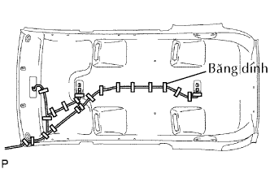
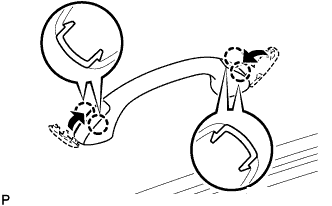
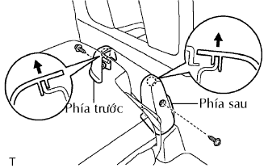

KÍNH CỬA SỔ TAI XE SAU > LẮP |
| 1. LẮPKẸP CỦA KÍNH TAI XE SAU |
Bôi sơn lót G lên kính ở đó có lắp kẹp.
Lắp 4 kẹp lên các dấu chấm của kính, như trên hình vẽ.
| 2. LẮP NẸP KÍNH TAI XE SAU PHẢI |
Bôi sơn lót G lên kính ở đó có lắp kẹp.
Lắp nẹp.
| Vùng | Điều kiện tiêu chuẩn |
| a | 6.0 mm (0.236 in.) |
| b | 8.0 mm (0.315 in.) |
| 3. LẮP KÍNH TAI XE SAU PHẢI |
Dùng chổi hoặc miếng mút, bôi sơn lót M lên phần lộ ra của thân xe.
Dùng chổi hoặc miếng mút, bôi sơn lót G lên mặt tiếp xúc của kính.
Bôi keo lên kính cửa sổ tai xe sau.
Cắt đầu của các vòi keo như được chỉ ra trên hình vẽ.
| Vùng | Điều kiện tiêu chuẩn |
| a | 12.0 mm (0.472 in.) |
| b | 8.0 mm (0.315 in.) |
| c | 13.0 mm (0.512 in.) |
| d | 22.2 mm (0.874 in.) |
| e | 6.0 mm (0.236 in.) |
| Nhiệt độ | Khung thời gian sử dụng |
| 35°C (95°F) | 15 phút |
| 20°C (68°F) | 1 giờ 40 phút |
| 5°C (41°F) | 8 giờ |
Lắp ống keo lên súng bắn keo.
Bôi khe làm kín lên kính cửa tai xe sau như trên hình vẽ.
Lắp kính cửa sổ tai xe sau vào thân xe.
Giữ kính cửa sổ tai xe sau chắc tại vị trí bằng băng dính hay tương đương cho đến khi keo đông cứng hoàn toàn.
Eùp nhẹ mặt trước của kính để đảm bảo lắp kín.
Dùng dao, cạo bóc keo lồi thừa.
| Nhiệt độ | Thời gian tối thiểu trước khi lái xe |
| 35°C (95°F) | 1 giờ 30 phút |
| 20°C (68°F) | 5 giờ |
| 5°C (41°F) | 24 giờ |
| 4. LẮP NẸP KÍNH TAI XE SAU PHẢI |
| 5. LẮP CỤM ỐP TRẦN XE |
|  |
Gióng dây điện vào các dấu và sau đó lắp dây điện bằng băng dính.
 |
Lắp lót trần xe bằng 8 kẹp.
| 6. LẮP TAY NẮM |
Lắp tay nắm bằng 2 vít.
|  |
Nhả khớp 4 vấu và đóng 2 nắp.
| 7. LẮP NẸP TRONG DỌC TRẦN XE PHÍA TRÊN BÊN PHẢI |
| 8. LẮP TRANG TRÍ TRỤ TAI XE SAU BÊN PHẢI |
| 9. TẤM ỐP TRANG TRÍ BÊN TRONG TAI XE SAU PHẢI |
| 10. LẮP CỤM ĐAI NGOÀI GHẾ SAU NO.2 BÊN PHẢI |
 |
Nối móc sàn của đai an toàn bằng bulông.
| 11. LẮP CỤM ĐAI NGOÀI GHẾ SAU NO.1 BÊN PHẢI |
 |
Nối móc sàn của đai an toàn bằng bulông.
| 12. LẮP GIOĂNG CỬA SAU PHẢI |
| 13. LẮP TẤM ỐP BẬU CỬA SAU PHẢI |
| 14. LẮP TẤM ỐP BẬU CỬA HẬU |
 |
Cài khớp 6 kẹp và 4 vấu để lắp ốp bậu cửa.
| 15. LẮP CỤM GHẾ NO.2 SAU PHẢI |
Nghiêng lưng ghế hoàn toàn về phía trước.
Hãy để ghế vào móc khoá.
 |
Lắp bu lông ởø phía sau của ghế.
Lắp bu lông ở phía trước của ghế.
Khoá hoàn toàn ghế vào móc khoá.
| 16. LẮP NẮP CHE GIÁ BẮT PHÍA SAU GHẾ SAU PHẢI |
| 17. LẮP NẮP CHE GIÁ BẮT PHÍA TRƯỚC GHẾ SAU PHẢI |
|  |
Nghiêng lưng ghế hoàn toàn về phía trước.
Tháo vít.
Kéo nắp che giá bắt theo hướng chỉ ra bởi mũi tên trong hình vẽ để nhả khớp vấu và tháo nắp che giá bắt.
| 18. KIỂM TRA RÒ RỈ VÀ SỬA CHỮA |
Tiến hành thử rò rỉ sau khi keo làm kín đã đông cứng hoàn toàn.
Hàn bất cứ chỗ hở nào bằng keo kính.